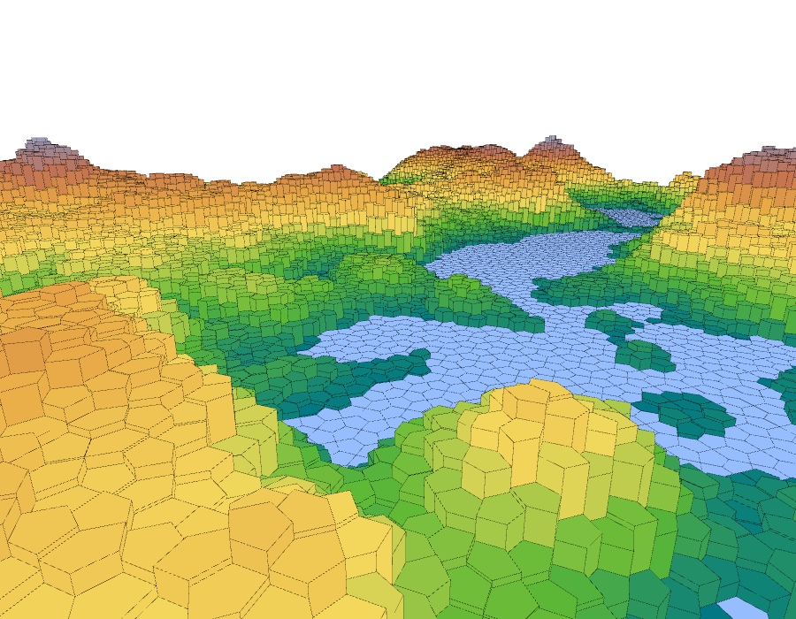
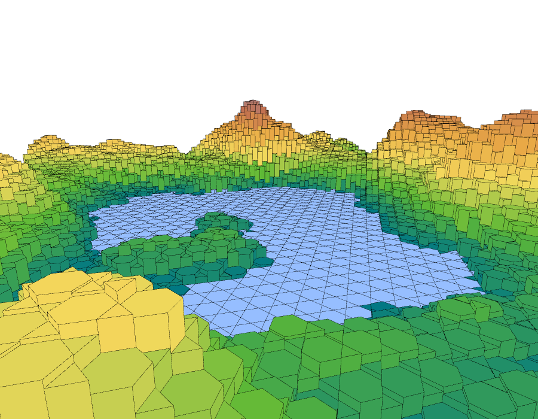
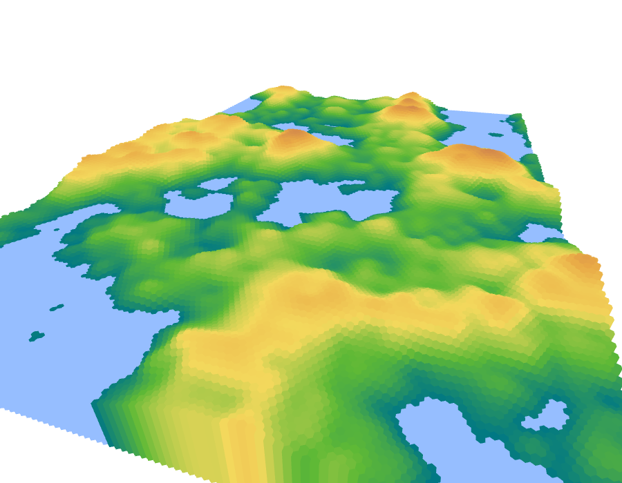
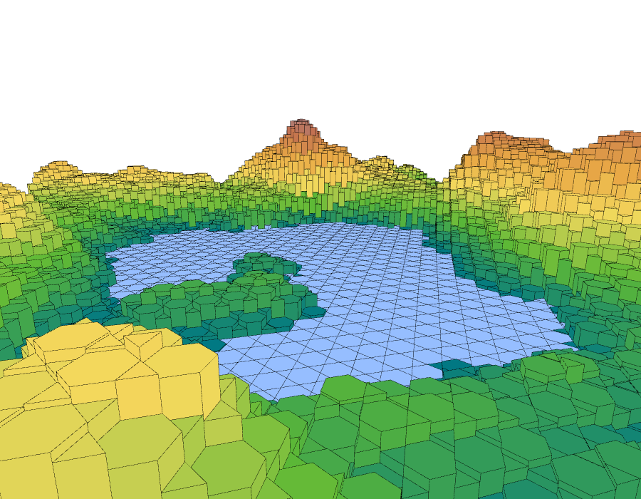
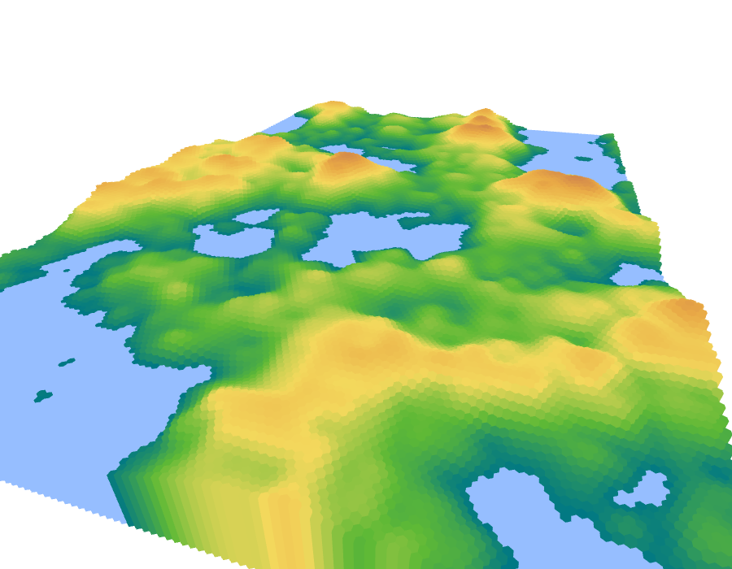

back
Creative Coding
NoiseMaps
A 3D visualization of "maps" generated with Perlin Noise, built-into Processing.
several tesselations were implemented by hand, the height of each prism is defined by the noise value.

 



Fireworks
a firework-shooting toy with 7 different styles of firework
plus a black hole rocket which attracts the particles from other fireworks!
Repository on GitHub
Hex Video Filter
A Hex-tesselation filter for video, shown bellow working in real time with a webcam.
(looks better in fullscreen)
Sinusoidals
Assorted images generated from the sine function.
all made with Processing.


Circle Morphing
a couple of circle-to-triangle morphs created with P5.js for Daniel Shiffman's Coding Challenge #81


Autostereogram Generator
Implementation of a random dot autostereogram generator algorythm found online.
Autostereograms are the "magic eye" illusions. The example bellow is supposed to reveal a horse. (click to see it in full size)

Miscellaneous


back